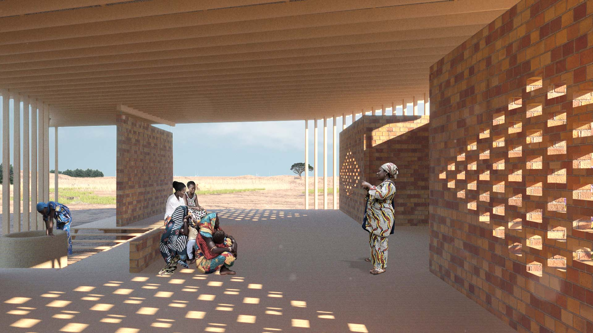
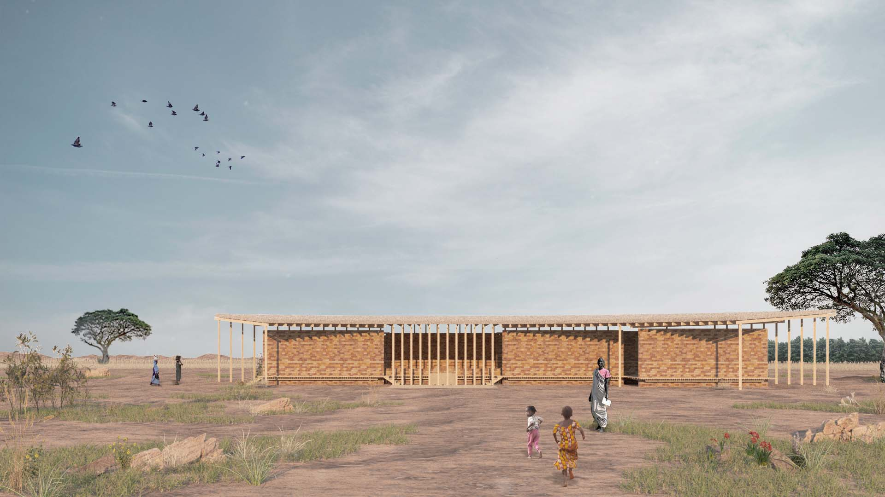
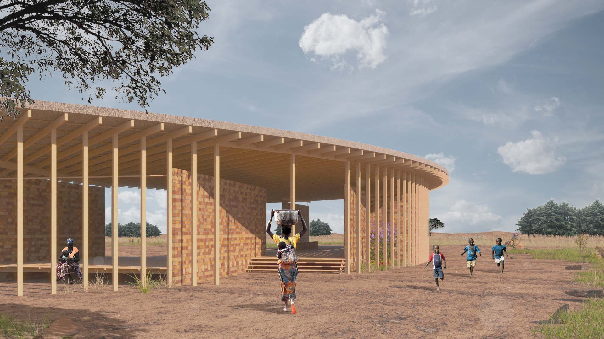
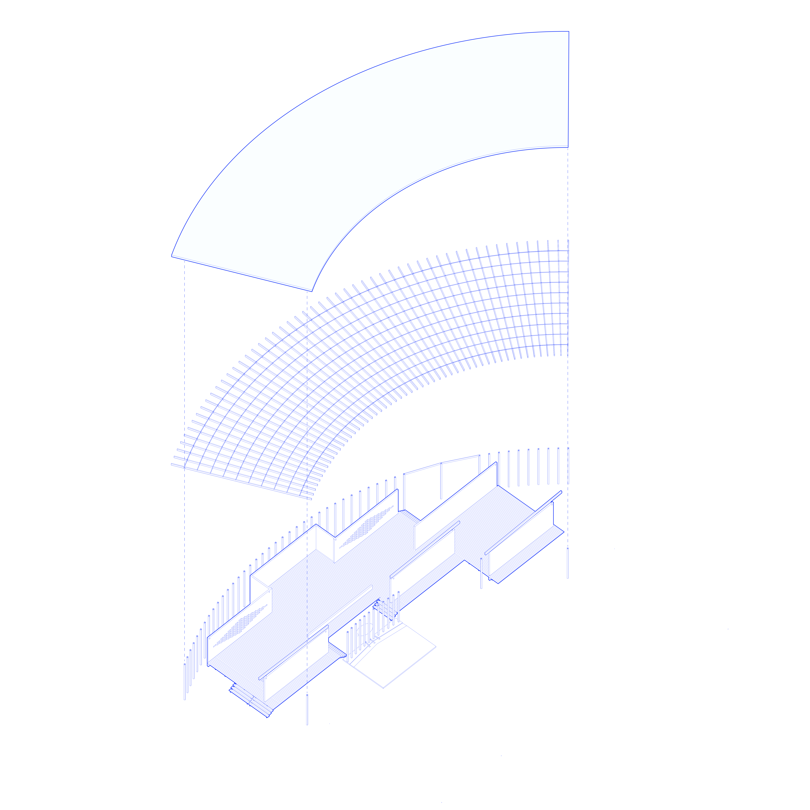
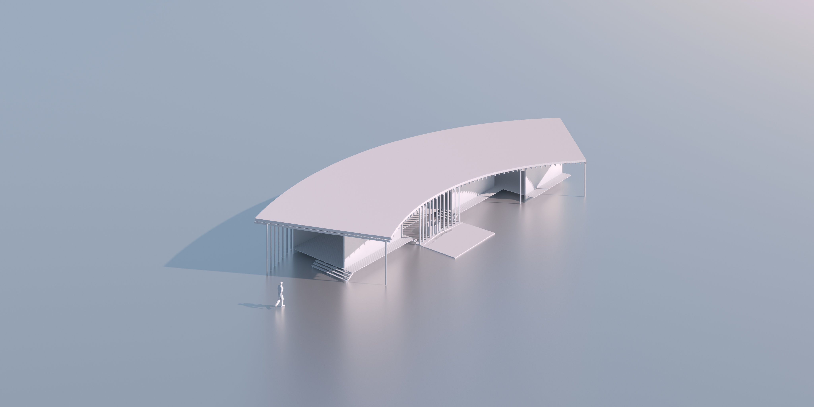
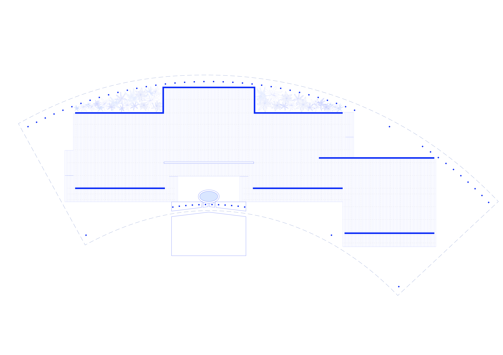
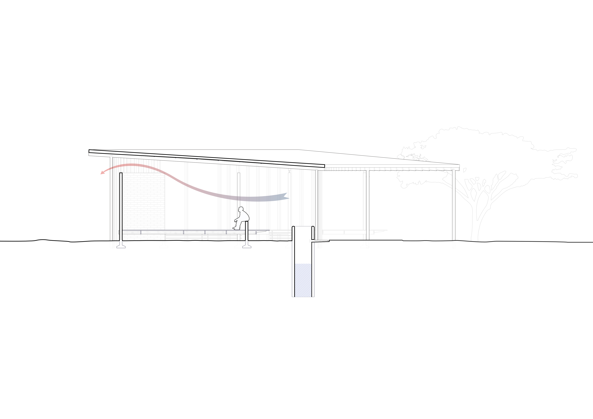

Baghere Village is a small community in rural Senegal where women play a central role in daily life. The project proposes a communal gathering space — a women's house — designed to support social exchange, work, and collective life within the village fabric.






